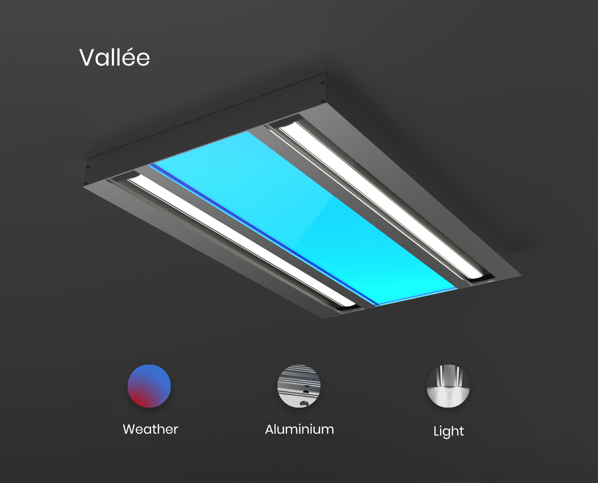

Prospective workshop for Lumen pulse in partnership with the Université de Montréal. Imagined a new product in the spirit of the brand.
Preliminary research to identify which issue to address. Analysis of the different products of the Lumenpulse brand.
After identifying the problem, I imagined a lamp connected to the outdoor weather. DIY projects already existed but none of them had a serious enough appearance to be integrated into an institutional space. It is composed of a utility lighting with two classic led bars and a led matrix that reacts to the outdoor weather.
The structure is composed of two identical aluminium extrusions connected by aluminium plates. Aluminum is widely used in lighting for its heat diffusion capacity, appearance and lightness.
The central LED array can receive information via the Lumentalk technology produced by Lumenpulse and avoids the need to integrate additional electronics into the lamp. For the appearance of the LED matrix, the colour changes in gradation. Here I didn't have time to realize it but this kind of aspect is possible with the "Perlin Noise".
The prototype uses square steel tubes. The weight of the prototype is important but steel is cheaper.
Vallée is an elegant ceiling light that blends into the office environment. The discreet colour brings warmth or freshness to the space. It indicates the weather and recreates the link between the partitioned space and the outside.
